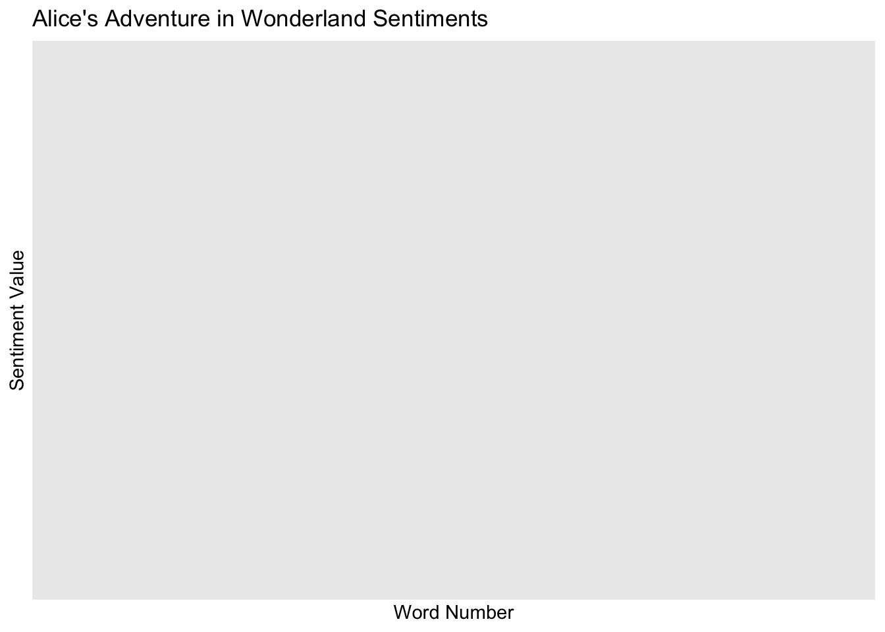

After reading the text mining chapter in the IDS textbook, I learned about Project Gutenberg, which is a digital archive of books that are publicly available. I installed the Gutenbergr package, loaded the library, and searched through some of the options. I chose to analyze Alice’s Adventures in Wonderland which has a Gutenberg ID of 11. I downloaded it from Project Gutennberg and saved it as ‘book’.
After installing and loading the tidytext package, I created a table with all the words in the book. I create another column to assign a word number to each word, so I can do sentiment analysis later in the exercise. I used the stop_words dataset to get rid of the stop words, so I could explore meaningful words that are most commonly included in the book. I used AI to assist me in removing all words that were numbers as well, which uses a function from the stringr package. I made another tibble with the top 50 most used words. ‘said’ is the most commonly used word with 460 uses, which is followed by ‘Alice’ being used 386 times and ‘little’ being used 127 times.
# A tibble: 6 × 2
word n
<chr> <int>
1 said 460
2 alice 386
3 little 127
4 one 100
5 know 87
6 like 85
Create a sentiment analysis
To complete sentiment analysis, I had to install another package called ‘textdata’ and load ‘tidytext’ to explore the ‘bing’ and ‘afinn’ lexicons. I used the “bing” lexicon to assign positive or negative values to the words, and I used the ‘afinn’ lexicon to assign a score or value to each word. There are 4781 positive and 2005 negative words included in the ‘bing’ lexicon. There are only 16 words that get assigned the most negative score of -5 in the ‘afinn’ lexicon with most words scoring between a negative 3 and positive 3. Only 1 word is considered neutral with a score of 0. I used the inner_join function with the clean words tibble to assign a sentiment to the meaningful words. The top five words are all negative with ‘pig’,‘mad’, ‘mock’, ‘stole’, and ‘tired’ being assigned negative sentiments. To explore this observation further, I used the ‘afinn’ option to find the scores for each word.For example, ‘mad’ was assigned a -3 and ‘mock’ wass assigned a -2, which is interesting because I would consider ‘mock’ to be more negative than ‘mad’ personally.
I loaded the ggplot2 package to create visualizations of the sentiments throughout the book. I used the ‘alice_affin’ dataset because it already includes the sentiment value assigned to each word. The smoother line on the scatterplot shows that the overall sentiment throughout the book hovers around neutral with slightly higher levels of positive words in the beginning. Words with a score of 2 and -2 are consistently spread throughout the book, which makes sense given most words receive those mild scores. The extremely positive words receiving a 4 on the ‘afinn’ scale are spread sparsely through the book. The most negative words receiving a score of -3 are seen more frequently throughout the book with a cluster around word number 12,500, which corresponds to the midpoint of the book roughly. I loaded the ‘here’ library, so I could save this scatterplot in my portfolio.
library(ggplot2)sentiments <-ggplot(alice_affin, aes(wordID, value)) +geom_point(alpha =0.5) +geom_smooth(method ="loess", se =FALSE, color ="pink") +labs(title ="Alice's Adventure in Wonderland Sentiments", x="Word Number", y="Sentiment Value")print(sentiments)
`geom_smooth()` using formula = 'y ~ x'

library(here)
here() starts at /Users/taylorglass/Documents/MADA /taylorglass-MADA-portfolio
Saving 7 x 5 in image
`geom_smooth()` using formula = 'y ~ x'
I used AI to assist me in writing the code to generate a visualization of the average sentiment for each page. I assumed there were 250 words per page and created a new variable assigning word number to a page number in ‘alice_affin’. I computed the average sentiment per page to create a variable for the y-axis of the visualization and created a new datset grouped by that page variable called ‘pagesentiment’. The scatterplot shows a random distribution of average sentiment scores across all the pages of the book. The smoother line shows the first 60 pages are slightly more positive on the ‘affin’ scale while pages 60 to 90 are balanced to be fairly neutral. Around page 120, we see an increase in the average sentiment score, which makes sense because most stories like Alice’s Adventure in Wonderland end on a positive note. I also saved this plot to my portfolio.